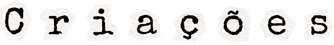
Projetos pessoais e hobbies

Comecei a desenvolver uma extensão de Pet Virtual VSCode (Em andamento)
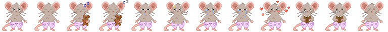
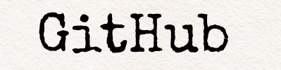
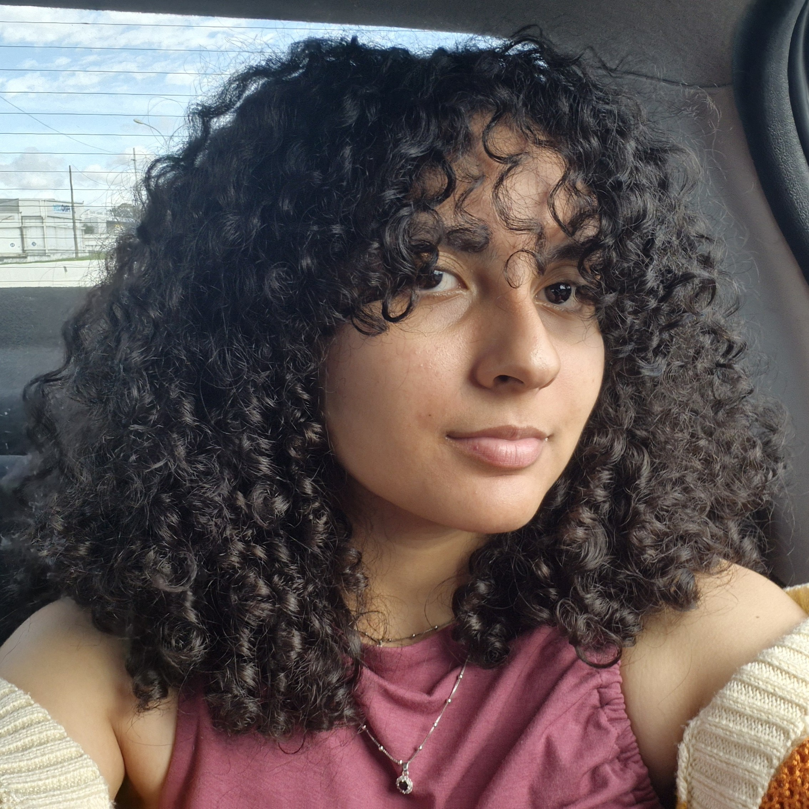
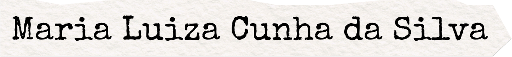
Olá! Sou estudante de Sistemas de Informação da Universidade Tecnológica Federal do Paraná (UTFPR).
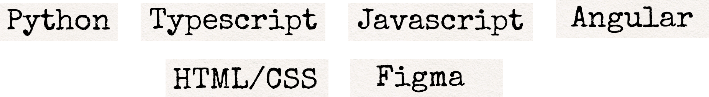
Protótipo de aplicativo mobile que têm como propósito auxiliar no cuidado emocional e no acompanhamento do bem-estar dos estudantes, foi desenvolvido na disciplina de Projeto de Interfaces e Experiências Digitais da universidade.
Clique na imagem acima para acessar o protótipo
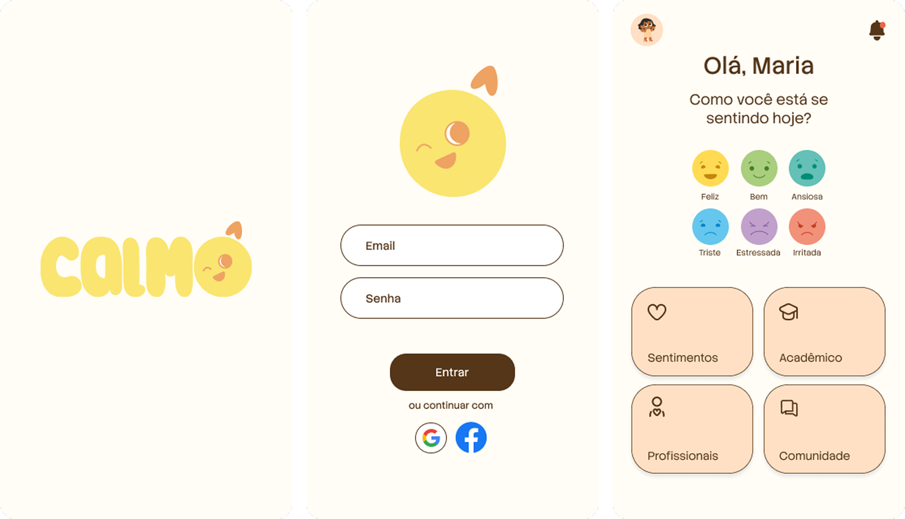
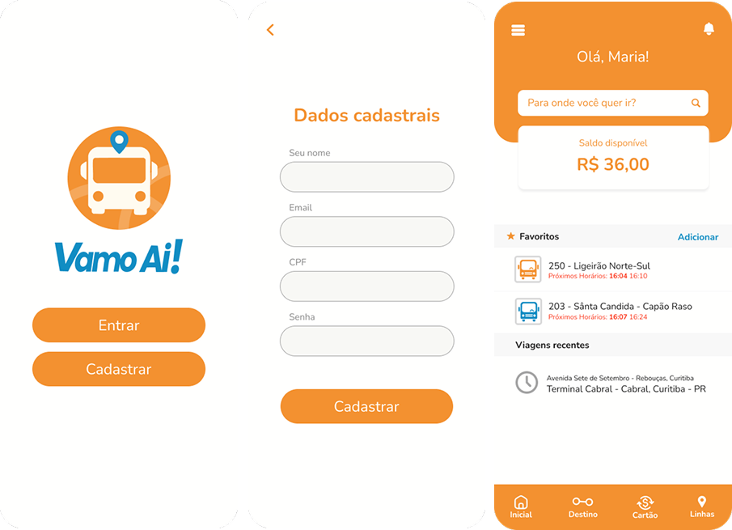
Outros projetos feitos: Análise de Dados sobre a Demanda de Saúde Mental em Curtiba e Região Metropolitana
Participei como voluntária e bolsista no projeto TIChers, que tem o objetivo de aumentar a representatividade de mulheres na Computação, com ações de conscientização e formação de docentes que multiplicarão esta mensagem para as suas turmas.
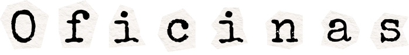
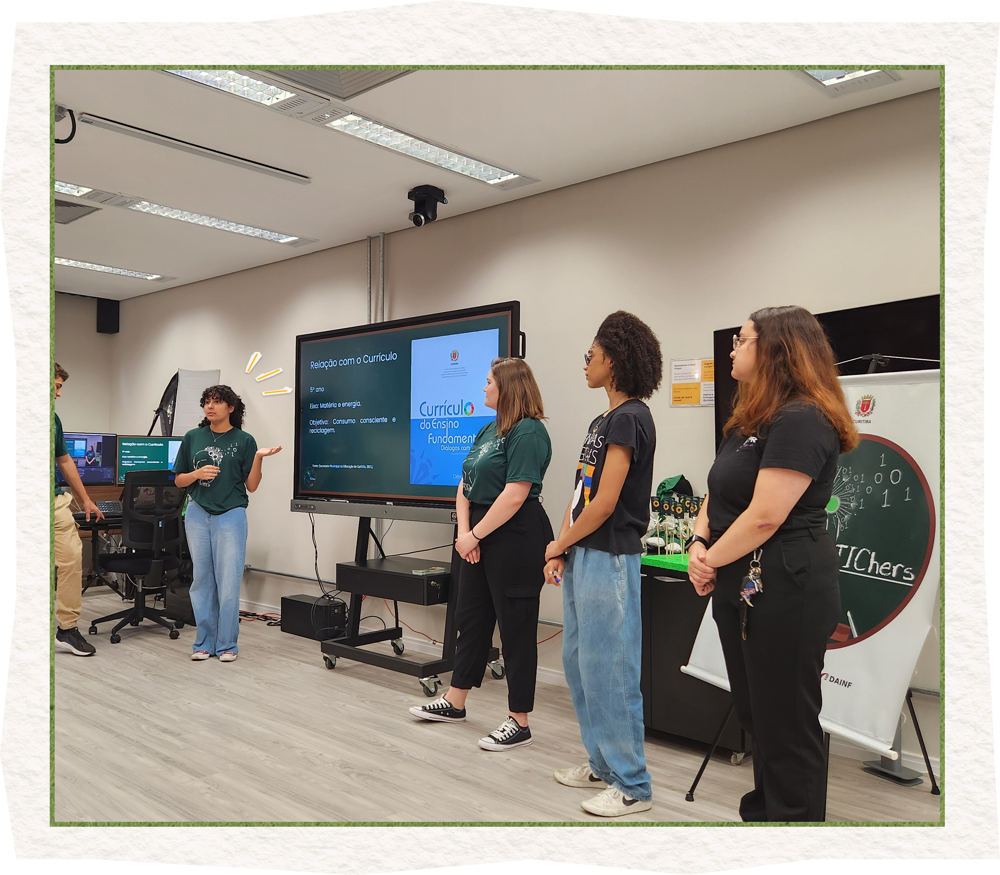
Desenvolvi e apresentei oficinas sobre conscientização ambiental do uso de inteligência artifical e descarte incorreto de lixos eletrônicos no meio ambiente
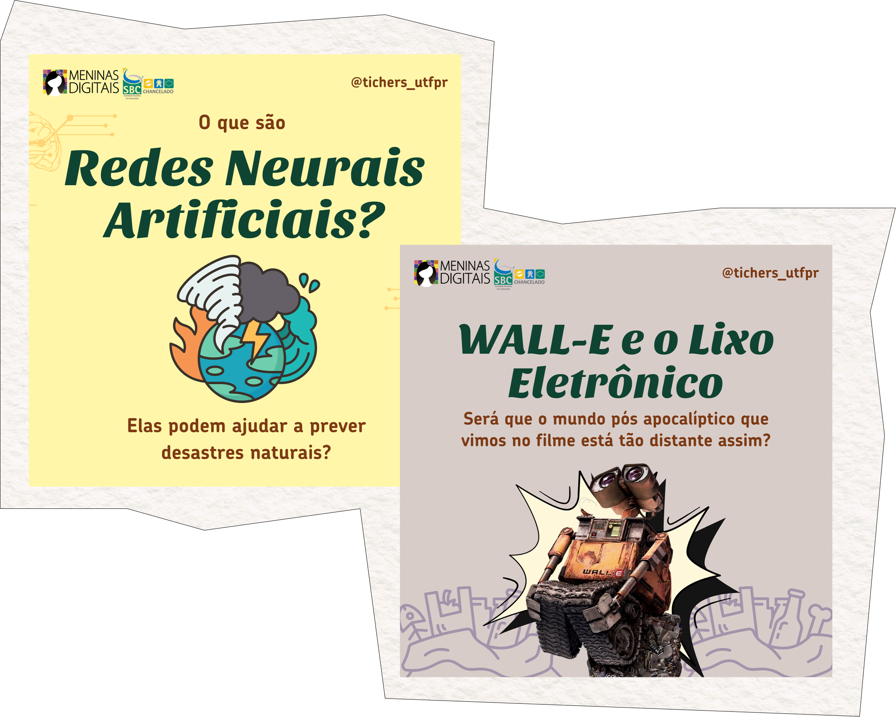
Desenvolvi posts para as mídias sociais em conjunto com a equipe de mídias do projeto.
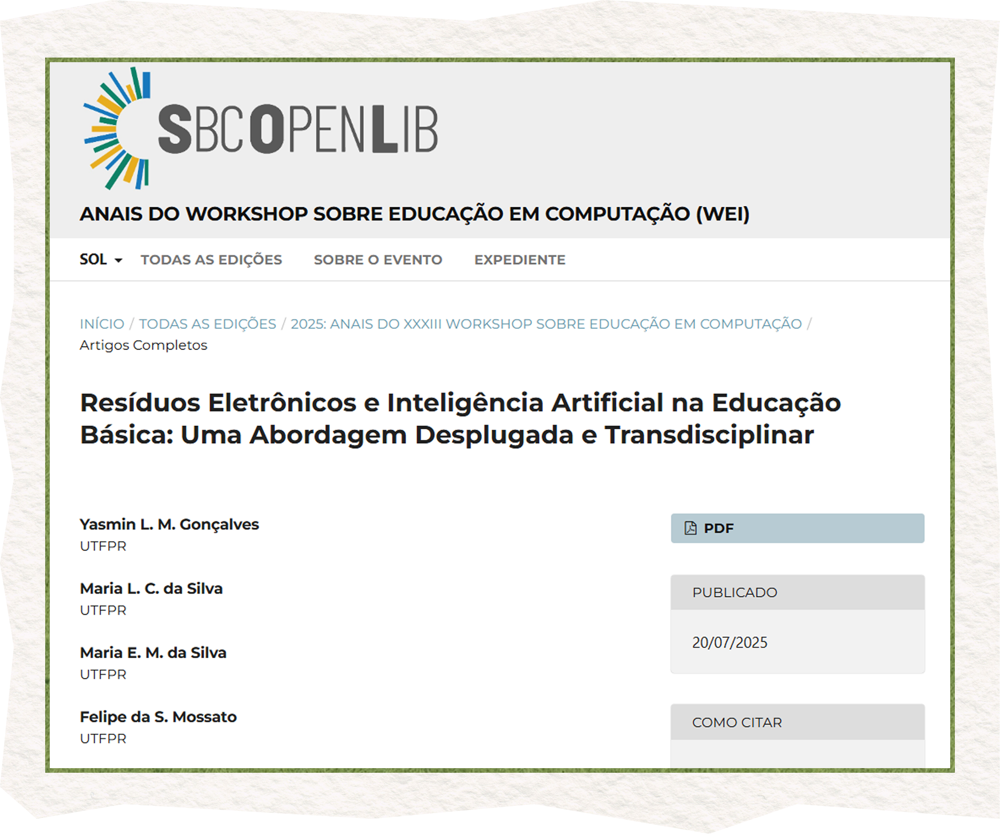
Publiquei artigos e resumos extendidos com base nos dados obtidos das oficinas.

Projetos pessoais e hobbies
Comecei a desenvolver uma extensão de Pet Virtual VSCode (Em andamento)
